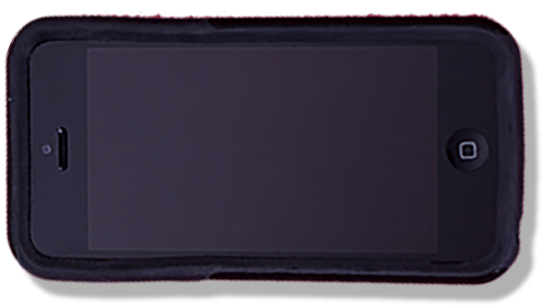

Your best friend, your confidant, your right hand man, your lover if you’re a character in a Spike Jonze movie: your cell phone. For better or worse, mobile phones are an integral part of modern life. The recent generation of iPhones may be popular, but there are still some holdouts on campus who communicate the old-fashioned way with the 2015 equivalent of a string tied to a tin can.

LG OCTANE
- Manon Blackman, Medill freshman
LG COSMOS 3
"Eventually I'll have to upgrade for the necessity of having the Internet on my phone when I'm away from school where there's Wi-Fi everywhere. [Right now] I have an iPod Touch with Internet."
- Jesse Itskowitz, Communication senior

AT&T AVAIL 2
"While smartphones are convenient, a good many of us get too dependent on them and it does affect our interactions with others, often in negative ways. We often stick within our little bubbles, but I've had the joy of striking up conversations with strangers just by keeping my phone and earphones in my pocket. It's not about being anti- or pro-technology but about finding some sort of balance between our digital and physical worlds."
- Dominique Teoh, Communication freshman

LG XPRESSION
"I absolutely love my phone! The battery lasts for about three days at a time. It’s virtually indestructible."
- Scott Gerson, SESP freshman
IPHONE 6 PLUS
"I can't hold it up to my face to talk on it, but I still like it."
- Kimberly Keating, Weinberg freshman

IPHONE 5C
- Hannah Reich, Weinberg freshman